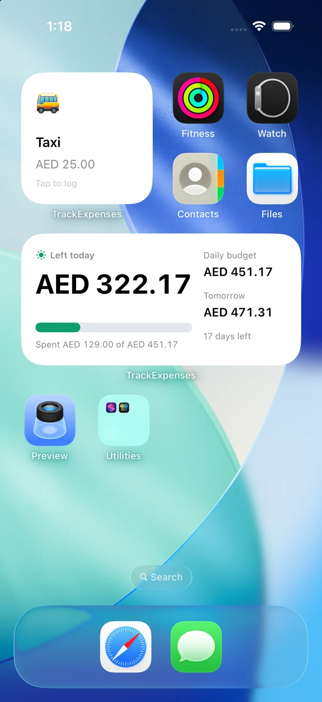
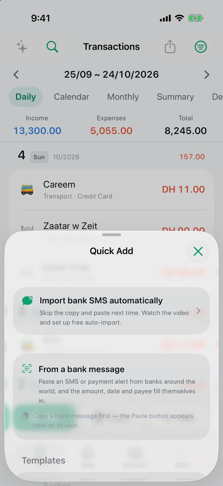

FEATURE · WIDGETS, SIRI & SHORTCUTS · FREE
Your budget, one glance away.
Ask Siri what you can spend today, log your morning coffee with one tap from a widget, and keep your budget on the Home Screen, the Lock Screen and in Control Center. Seven widgets, five controls and ten Siri phrases, and the app shows each one with your own figures in More → Siri, Shortcuts & Widgets.


Real app screens with example records.
Ask Siri
Say the app's name in the phrase. “What can I spend today in TrackExpenses” answers with what is left of today's daily budget: the period's budget after repeating bills, shared across the days left. “How much did I spend on Groceries in TrackExpenses” uses your own category names. “Tell TrackExpenses what I spent” takes a sentence such as “coffee 15 and taxi 40 with cash”, reads it back and saves it when you say yes. “Log my Coffee in TrackExpenses” logs a saved template. Siri asks you to unlock before it reads out a budget or a balance; logging works hands-free with the phone locked. The phrases also work in Arabic. Read the Siri and widgets guide for every phrase.
Seven widgets
- Today: what you can spend today, after bills, shared across the days left.
- Budget: what is left this period, with a marker for where today falls.
- Quick Log: your saved templates as buttons; one tap logs the coffee, fare or lunch without opening the app.
- Category Budgets: each category against its budget, with today's pace beside it.
- Spending Overview: today, the last two weeks, income and net balance.
- Accounts: net worth and your balances, all in your main currency.
- Quick Add: type, say or paste a bank message; a Lock Screen microphone opens Say it.
Quick Log, Category Budgets and Accounts can each follow one template, category or account: touch and hold the widget and choose Edit Widget. Every widget but Quick Add’s larger size also fits the Lock Screen, and figures stay hidden there until you unlock an iPhone with a passcode.
Control Center and the Action button
On iOS 18 and later, add Quick Log, Today's Budget, Add an Expense, Say an Expense and Paste an Expense to Control Center or the bottom of the Lock Screen. Set Quick Log to your morning coffee and put it on the Action button: one press logs it and the app never opens.
Shortcuts and automations
Every action is ready in the Shortcuts app, from Log an Expense and Log Income to Today's Budget, Category Spending and Account Balance, plus Import Bank Message and Import Wallet Transaction for automations. Try a morning automation that says what you can spend today, or a Wallet automation that logs Apple Pay purchases (see the Apple Pay guide).
Quick Add and templates
The Quick Add button holds two shortcuts: paste a bank message to fill the amount, merchant and date, or tap a saved template for the things you buy every week. Turn on “Save as template” in the entry sheet to make one, and it appears on the Quick Log widget, in Siri and on the Quick Log control too.
Questions
Are the widgets and Siri free?
Yes. Every widget, control and Siri phrase is free. The daily budget figure on the Today widget and in Siri's answer is part of Pro; without Pro, Today shows what you have spent today. “Tell TrackExpenses what I spent” counts as voice entry: 10 saved entries a month free, unlimited with Pro.
Does a Quick Log tap need the app open?
No. The entry is saved on your iPhone straight away and the widget says it is waiting; it appears in your ledger the next time you open TrackExpenses.
Does anything leave my phone?
No. Widgets, controls and Siri read a short summary TrackExpenses keeps on the device; nothing is sent anywhere to make them work.
Which iOS do I need?
Control Center and Lock Screen controls need iOS 18 or later. Widgets, Siri and Shortcuts work from iOS 17.
Your money, easier to follow.
Expense Tracker: SMS & Voice for iPhone and iPad.
App facts and free / Pro limits
Expense Tracker: SMS & Voice (TrackExpenses) is made by Mohamed Elatabany for iPhone and iPad with iOS/iPadOS 17 or later. The app is in English, Arabic and German, with a full right-to-left Arabic interface. No app account or bank login is required. Optional Shortcuts automations import supported bank SMS and Wallet purchases; the app does not read your Messages inbox. Voice entry creates on-device drafts on compatible devices and languages. The free ledger includes unlimited manual transactions, budgets, current-period budget moves and Cover with the total unchanged, days left and spent/left amounts, historical stats, search, monthly CSV export, private iCloud sync, 3 accounts, 2 recurring rules, 10 saved voice entries per calendar month per device and 10 successful automatic bank SMS imports per calendar month per device. The money coach reads the last budget month and suggests one limit. Questions it can answer by rule, charts, files and typed logging are worked out on the device; open questions go to Anthropic’s Claude through the developer’s relay only after the user agrees, with the conversation so far, a summary of this month and last month and, when the model asks, totals for up to 13 months or up to 20 purchases with their date, shop, category and amount; never notes, receipts, account names or numbers, or balances (10 a month free per device). SMS alerts past the free allowance are kept but locked outside totals; upgrading to Pro adds them all, otherwise the next calendar month’s allowance releases as many as it covers. Nothing is dropped and saved history is never locked. Pro adds unlimited voice entry, SMS imports, accounts and recurring rules, money coach challenges and more coach questions, a salary plan, forecasts, overall and per-budget daily guidance with repeating bills accounted for first, what-if planning, CSV import, date-range CSV exports, full JSON backup and restore, themes and alternate icons. Monthly and annual subscriptions and a one-time lifetime purchase are available. Spending calculations depend on your records and are not financial advice.